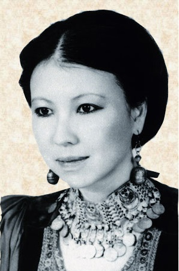

毛于1943年3月26日生于四川重庆。幼年时期的三毛就表现对书本的爱好，五年级下学期第一次看《红楼梦》。初二那年休学，由父母亲悉心教导，在诗词古文、英文方面，打下次坚实的基础。1967年只身远赴西班牙。在三年之间，前后就读西班牙马德里大学、德国哥德书院，在美国伊诺大学法学图书馆工作。对她的人生经验和语文进修上有很大助益。
1970年回国，受张其均先生之邀聘在文大德文系、哲学系任教。后因未婚夫猝逝，她在哀痛之余，再次离开，又到西班牙。与苦恋她6年的荷西重逢。1973年，于西属撒哈拉沙漠的当地法院，与荷西公证结婚。1976年5月出版第一部作品《撒哈拉的故事》。1979年9月30日夫婿荷西因潜水意外事件丧生，回到台湾。
1981年，三毛在国内定居。同年1月，《联合报》特别赞助她往中南美洲旅行半年，回来后写成《万水千山走遍》，并作环岛演讲。1984年，因健康关系，辞卸教职，而以写作、演讲为生活重心。1989后4月首次回大陆家乡，并专诚拜访以漫画《三毛流浪记》驰名的张乐平先生，了却夙愿。1990年从事剧本写作，
完
成第一部中文剧本，也是她最后一部作品《滚滚红尘》。
1991年1月4日清晨去世，享年48岁。